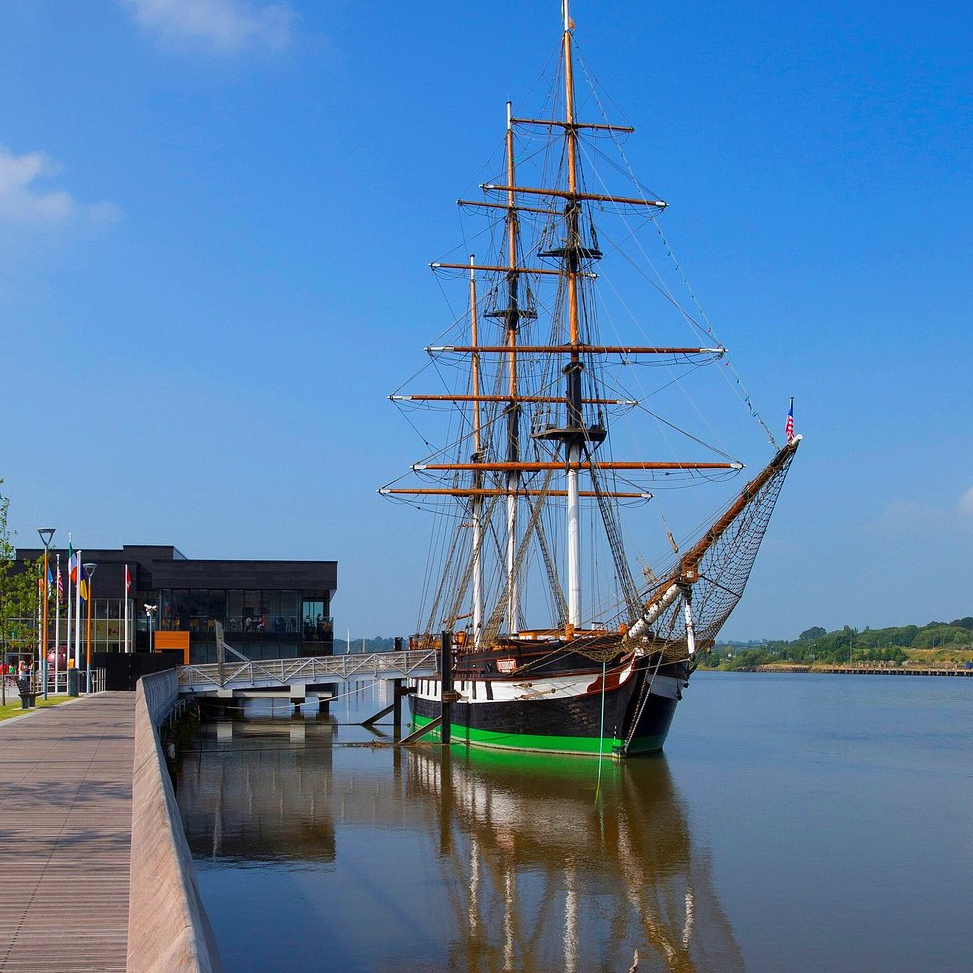
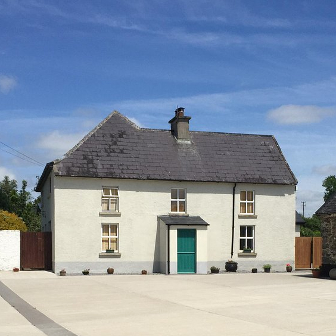
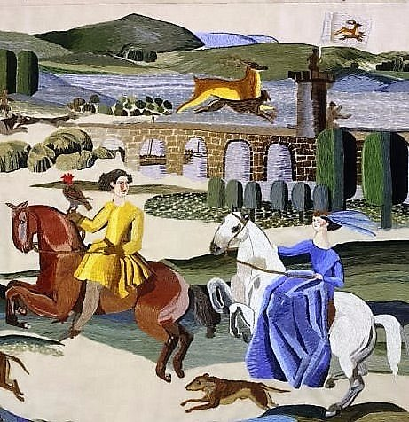
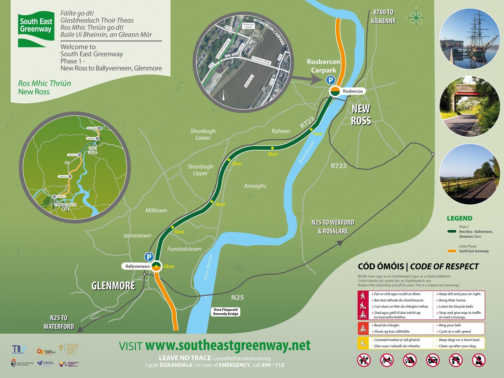
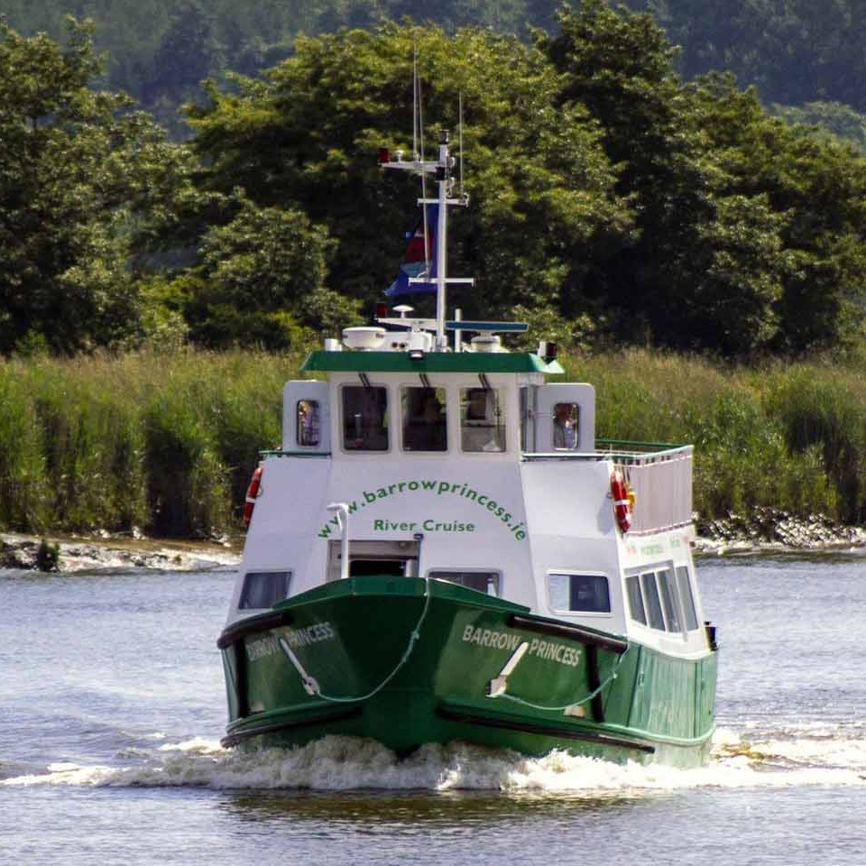
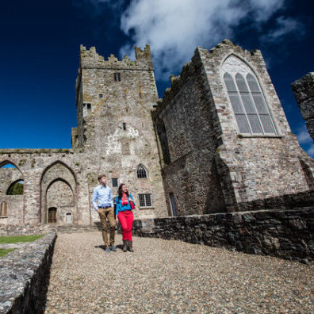
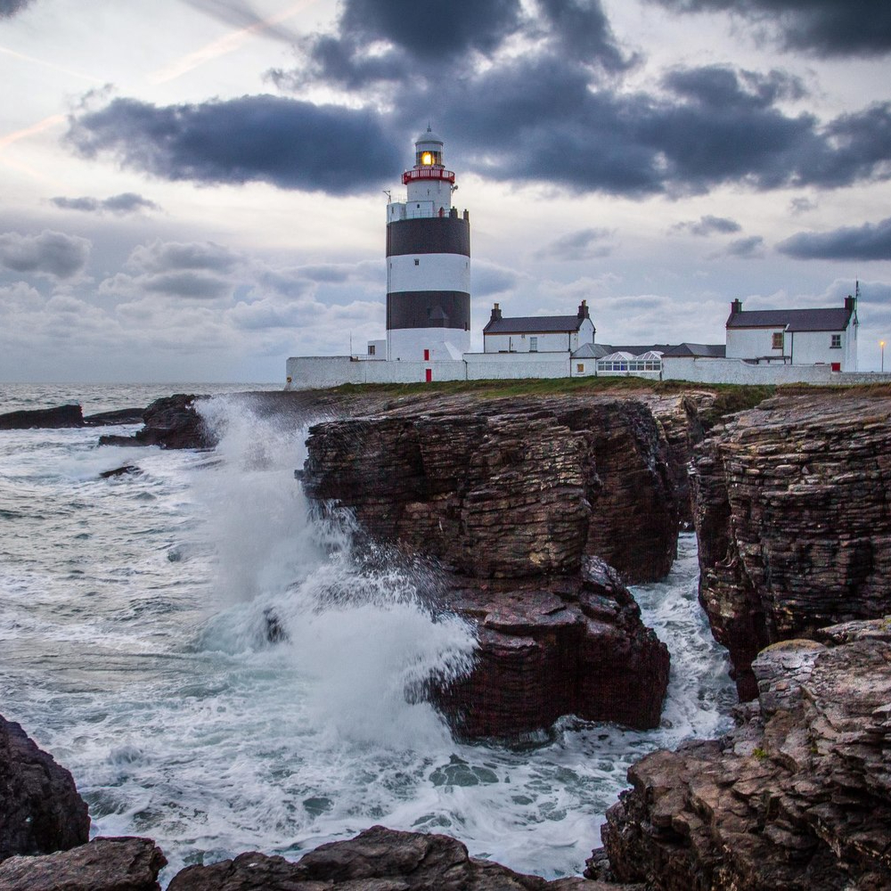

Discover NEW ROSS
Fáilte go Ros Mhic Thriúin
Top 3 Attractions
Don't miss these magical experiences
Dunbrody Famine Ship
Kennedy Homestead
Ros Tapestry
Opening Soon: South East Greenway!
South East GreenwayThe South East Greenway will follow the old railway line from New Ross to Waterford City. Phase 1 from New Ross to Glenmore is now open.
Magical Landscapes to discover
New Ross is the ideal base for exploring Ireland's stunning South East
Barrow River Cruise
The Norman Way
The Ring of Hook
Your host
Hi, I'm Leo
I grew up and went to school in New Ross. I have mixed feelings about the place as I grew up during a period of deindustrialization which led to a deep recession in the 70s, 80s and early 90s. People were hit hard and many suffered from poverty, immigration and addiction with obvious anti-social consequences. Things have improved in many ways and I made this site to focus on the positive aspects of New Ross which has wonderful people, astounding natural beauty and mind-blowing history.
Fun facts
- The town's bridge was destroyed by ice floes in 1867
- New Ross in Irish, Ros Mhic Threoin, means 'the wood of the son of Troin'
- New Ross is Ireland's only inland port, located 32 km from the sea